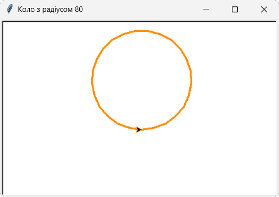
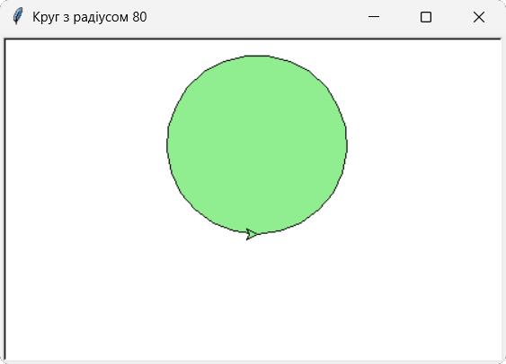
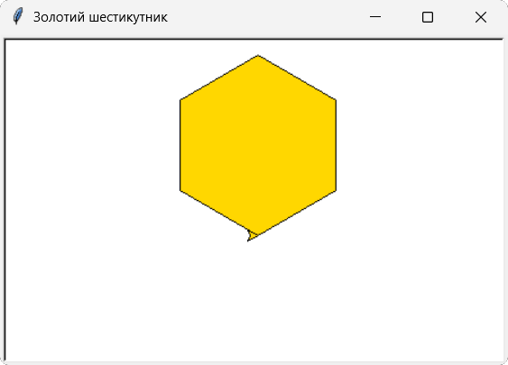
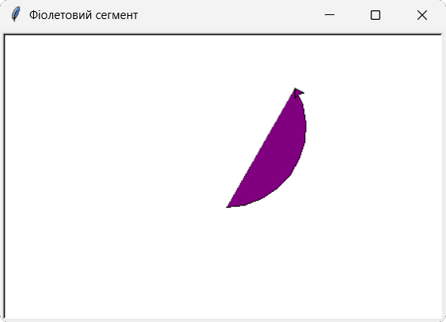
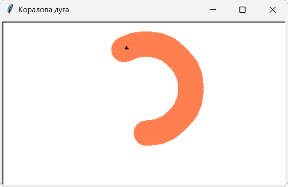
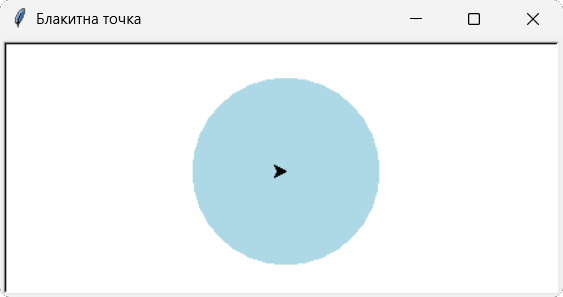

В цьому розділі ти дізнаєшся про те, що крім ліній та багатокутників, які ти вже вмієш малювати, можна створювати: кола, дуги, кольорові точки, візерунки та орнаменти.
Для цього в модулі turtle є методи: circle() та dot(), які будемо зараз вивчати.
Метод circle() :
| Метод | Опис |
|---|---|
| circle(радіус) | Черепашка малює коло вказаного радіусу. Наприклад: turtle.circle(100) - буде намальоване коло з радіусом 100 пікселів. |
| circle(радіус, кут) | Черепашка малює частину кола (дугу). Наприклад: turtle.circle(100, 180) - буде намальована дуга з радіусом 100 пікселів довжиною 180°, тобто півколо. |
| circle(радіус, кут, кроки) | Черепашка замість кола малює багатокутник. Наприклад: turtle.circle(100, 360, 5) - буде намальований рівносторонній п'ятикутник, а в цьому прикладі: turtle.circle(100, 360, 5) - буде намальований рівносторонній восьмикутник, о ось у цьому прикладі: turtle.circle(100, 180, 3) - буде намальована ламана, яка скдається із троьох ланок, які утворюють півколо. |
Метод dot():
| Метод | Опис |
|---|---|
| dot(розмір) | Черепашка намалює круглу точку вказаного розміру. Наприклад: команда turtle.dot() - намалює точку товщиною в 1 піксель (значення за замовчуванням), а команда turtle.dot(20) - намалює точку товщиною в 20 пікселів. |
| dot(розмір, "колір") | Черепашка намалює круглу точку вказаного розміру та кольору. Наприклад: команда turtle.dot(60, "red") - намалює червону точку товщиною в 60 пікселів. |
1. Намалюємо коло оранжевого кольору з радіусом 80.
import turtle
scr=turtle.Screen()
scr.title("Коло з радіусом 80")
scr.setup(width=450, height=350)
t = turtle.Turtle()
t.pencolor("#ff8c00")
t.pensize(3)
t.circle(80)
turtle.done()

2. Намалюємо круг зеленого кольору з радіусом 80.
import turtle
scr=turtle.Screen()
scr.title("Круг з радіусом 80")
scr.setup(width=450, height=350)
t = turtle.Turtle()
t.fillcolor("lightgreen")
t.begin_fill()
t.circle(80)
t.end_fill()
turtle.done()

3. Намалюємо шестикутник золотистого кольору.
import turtle
scr=turtle.Screen()
scr.title("Золотий шестикутник")
scr.setup(width=450, height=350)
t = turtle.Turtle()
t.fillcolor("gold")
t.begin_fill()
t.circle(80, 360, 6)
t.end_fill()
turtle.done()

4. Намалюємо фіолетовий сегмент кола.
import turtle
scr=turtle.Screen()
scr.title("Фіолетовий сегмент")
scr.setup(width=450, height=350)
t = turtle.Turtle()
t.fillcolor("purple")
t.begin_fill()
t.circle(80, 120)
t.end_fill()
turtle.done()

5. Намалюємо дугу кола коралового кольору з товщиною лінії 40 пікселів.
import turtle
scr=turtle.Screen()
scr.title("Коралова дуга")
scr.setup(width=450, height=350)
t = turtle.Turtle()
t.pencolor("coral")
t.pensize(40)
t.circle(70, 210)
turtle.done()

6. Намалюємо блакитну точку розміром 150 пікселів.
import turtle
scr=turtle.Screen()
scr.title("Блакитна точка")
scr.setup(width=450, height=350)
t = turtle.Turtle()
t.dot(150, "lightblue")
turtle.done()

1. Намалюйте коло радіусом 150 пікселів та зафарбуйте його кориневим кольором.
2. Намалюйте напівколо зеленого кольору.
3. Створіть три різнокольорові точки різного розміру.
4. Намалюйте три ліхтарі світлофора за допомогою метода dot().
5. Намалюйте зелений дев'ятикутник за допомогою методу circle().
6. Створіть мішень для стрільби із лука.
Початковий рівень
1. Створіть 5 простих різнокольорових геометричних фігур.
2. Фігури мають не торкатися і не перетинати одна одну.
Середній рівень
1. Створіть будинок хоббіта з круглими вікнами та дверима.
2. Створіть біля будинку ялинку.
Достатній рівень
1. Створіть квітку.
2. Створіть веселку.
Високий рівень
1. Створіть мультиплікаційного персонажа "Капітошка".
2. Створіть велосипедне колесо.